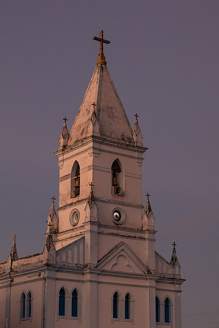

São Luís é a capital e maior cidade do Maranhão. Além de belezas naturais e arquitetônicas, o viajante deve estar ciente da história e cultura riquíssima maranhense.
Além do Tambor de Crioula, diversas outras danças típicas como as quadrilhas, a Dança do Caroço, a Dança do Lelê, a Dança do Coco, o Cacuriá, São Gonçalo, Dança Portuguesa entre outras, fazem da cultura imaterial maranhense um vibrante caleidoscópio artístico e folclórico vivo e autêntico